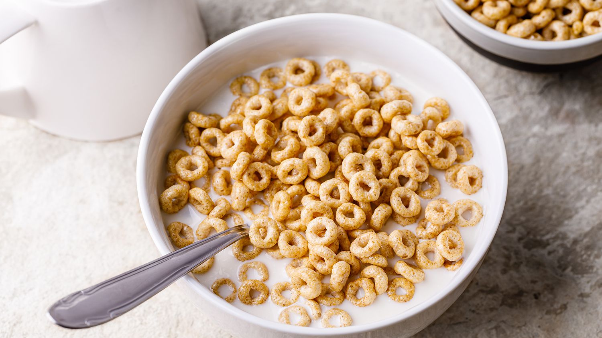

Cereal

Description
If I'm remembering correctly, a book I once read opened my eyes to the facts: cereal is basically a lie.
Yup, that's right. The corn industry invented it as a way to sell more
corn.
Most insidiously, they launched a deceptive ad campaign to dupe the world into
believing breakfast is the most important meal of the day and that cereal
is the ultimate breakfast food.
Well, cereal may be a lie, but it's a delicious
one. Peep the recipe below.
Ingredients
-
Your favorite cereal
-
Your favorite milk or milk alternative
-
Seriously, that's it
Steps
-
Pull your favorite bowl out of the ole cabinet. The bigger, the better.
-
Yank your favorite cereal right off the pantry shelf. I'm partial to anything
with loads of sugar. Bonus points for fun shapes. Pour cereal into bowl.
-
Reach in the fridge for any kind of milk or milk like product you have on hand.
We always seem to have almond milk, but in my youth I was a two percenter.
Pour the milk over the mound of cereal from the previous step.
-
Stick a spoon in there and eat up. At the end, you can slurp up the sugary milk.
It's a bonus that caps off a truly delicious meal.
Return to home